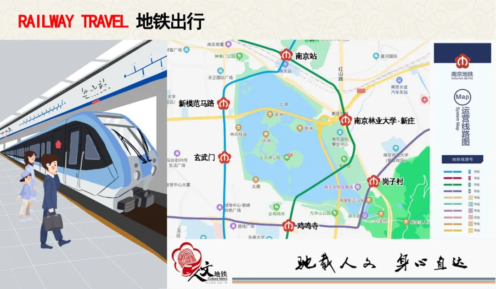

--图文详情--
端午渐近，玄武湖的湖面上再次响起震天的擂鼓与呐喊声，彩旗飞舞间色彩斑斓的龙舟如离弦之箭在湖面上劈波斩浪。这个端午来玄武湖，不仅可以观看精彩的专业龙舟竞赛，还能亲自下水体验一回竞舟湖上的速度与激情。
龙舟活动预约咨询：陆先生13813889952/李先生17715250529
玄武湖龙舟赛事预告

5月28日 9：00——11：00
专业龙舟竞赛（推荐观赛）
6月3日 9：00——11：00
亲子龙舟活动
6月4日 13：30——16：30
专业龙舟竞赛（推荐观赛）
6月5日 9：00——10：30
玄武湖全民龙舟体验活动（可报名参与）
观赛地点：玄武湖水上运动基地（阳光码头）

武湖全民龙舟体验活动招募中
对于大部分人来说，龙舟赛虽然精彩热闹，但受于场地和参与人数的限制，很难真正参与其中。不过，机会来了！这个端午假期，玄武湖全民龙舟体验活动正在招募中！面向广大市民、游客，在专业教练的指导下，竞舟湖上，感受浓浓的节日氛围！
招募时间：即日起至6月4日14：00（招完即止）
活动地点：玄武湖水上运动基地（阳光码头）
活动启动条件：报名满10人即可成团，上限人数68人。儿童要求1.3米以上且需家长陪同，均按全票收费。
活动价格：限时优惠98元/人（原价150元/人）
费用包含：教练员、救生衣、手机防水套。

交通指南
地铁：地铁四号线岗子村站3号口出，沿阳光路步行454米至玄武湖阳光码头。
公交：乘坐2路、17路、24路、36路、40路、125路至龙蟠路·岗子村公交站步行400多米至阳光码头；乘坐6路、11路、10路、68路、70路至板仓街·岗子村步行700多米至阳光码头。
自驾：地图搜索玄武湖景区停车场龙蟠路100号即可到达情侣园停车场，可选择步行或乘坐观光车前往阳光码头。

登上央视的玄武湖龙舟
玄武湖开阔的水域环境与秀美的自然风光，是开展龙舟运动的绝佳场地，近年来玄武湖已经成为各类龙舟团建、赛事的首选场地。

“2019‘艾佳生活杯’玄武湖龙舟邀请赛”“2021‘领航杯’龙舟赛”等多场大型龙舟赛事均在此举办。2020年南京马拉松赛事直播期间，玄武湖的龙舟还登上了央视的舞台。


龙舟是中国民间传统水上体育娱乐项目，是一种多人集体划桨竞赛，多是在喜庆节日举行，现流行于中国及世界上一些国家与地区。

龙舟不仅是一种体育娱乐活动，更体现出我国传统的悠久历史文化继承性和人们的集体主义精神。


总计：0.00元
购票